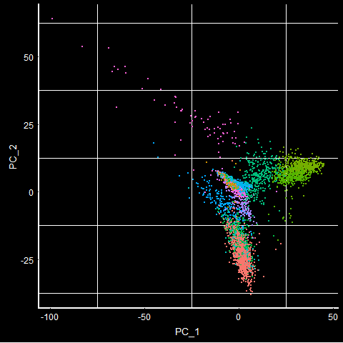
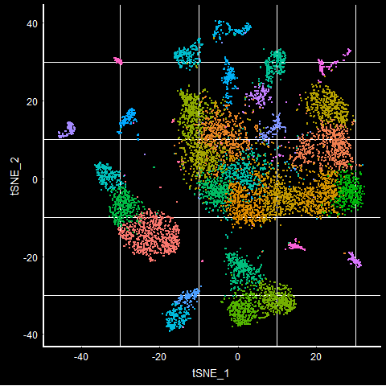
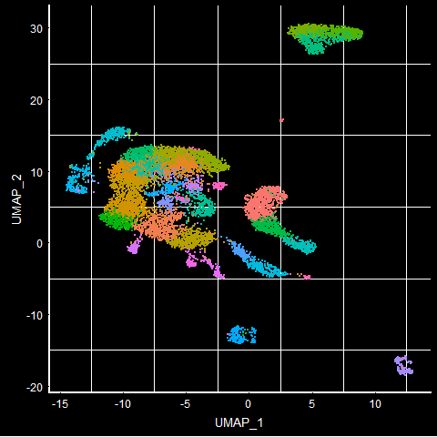
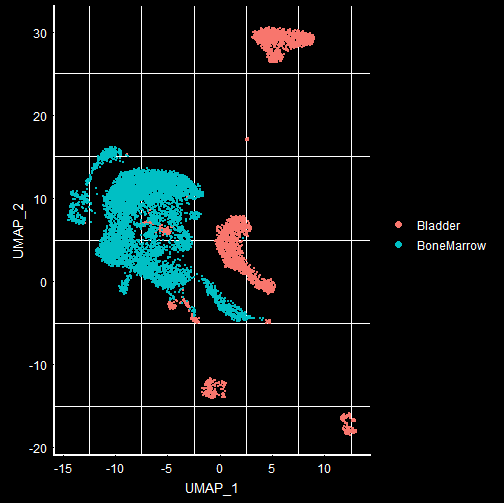
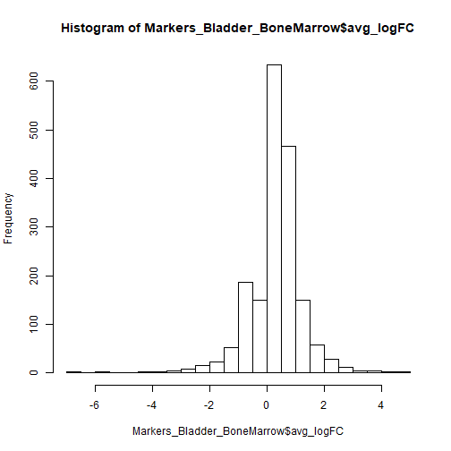

Single cell genomics - Seurat marker analyses
Most of the RNA-seq experiments focus on bulk RNA-seq methods. However, after closely looking at single cell datasets, the information obtained from single-cell experiments can throw light on variety of underlying biological processes. Here, I downloaded publicly available microwell-seq dataset (Mouse Cell Atlas) that has 400K cells profiled. Out of these 400K cells, 242K cells seem to have meta data information. I picked top 10K cells for Seurat analyses in this blog.
More R vignettes on Seurat can be found here: https://satijalab.org/seurat/vignettes.html
Mouse cell atlas (MCA): http://bis.zju.edu.cn/MCA/
Seurat R vignette on analyzing MCA can be found here: https://satijalab.org/seurat/v3.0/mca.html
Most of the code below is directly taken from the Seurat Vignette.
Seurat package can be used to classify different cell types and do additional analyses, such as finding markers that are specific to the cell types.
# required packages
rm(list = ls())
library(tidyverse)library(Seurat)library(markdown)library(tinytex)Download the MCA processed data i.e., RDS file directly from the link found in Seurat MCA guided clustering. Extract the files and store them in MCA folder. We only use the metadata and counts files in the below analyses.
# Using the metadata and the counts table
mca.matrix <- readRDS(file = "../MCA/MCA_merged_mat.rds")
mca.metadata <- read.csv(file = "../MCA/MCA_All-batch-removed-assignments.csv", row.names = 1)I stored the metadata of the cells in mca.metadata and the actual counts table (i.e., counts for each of the transcript and the cell) in mca.matrix.
# Quick look at the meta data
head(mca.metadata)## ClusterID Tissue Batch
## Bladder_1.AAAACGAAAACGGGGCGA Bladder_1 Bladder Bladder_1
## Bladder_1.AAAACGAAGCGGCCGCTA Bladder_5 Bladder Bladder_1
## Bladder_1.AAAACGAAGTACTAGCAT Bladder_16 Bladder Bladder_1
## Bladder_1.AAAACGACGTTGCTGTGT Bladder_8 Bladder Bladder_1
## Bladder_1.AAAACGAGCGAGCGAGTA Bladder_4 Bladder Bladder_1
## Bladder_1.AAAACGAGGGTCAGATGG Bladder_7 Bladder Bladder_1
## Cell.Barcode
## Bladder_1.AAAACGAAAACGGGGCGA AAAACGAAAACGGGGCGA
## Bladder_1.AAAACGAAGCGGCCGCTA AAAACGAAGCGGCCGCTA
## Bladder_1.AAAACGAAGTACTAGCAT AAAACGAAGTACTAGCAT
## Bladder_1.AAAACGACGTTGCTGTGT AAAACGACGTTGCTGTGT
## Bladder_1.AAAACGAGCGAGCGAGTA AAAACGAGCGAGCGAGTA
## Bladder_1.AAAACGAGGGTCAGATGG AAAACGAGGGTCAGATGGThe metadata can be used to group variables for downstream Seurat analyses. As an example, towards the end of this blog, I showed how to use Batch column (in the metadata above) to compare different batches of the same tissue.
# Seurat analyses (Most of the content in this block is directly copied from the Seurat Vignette)
dim(mca.matrix)## [1] 39855 405191In total, there are 405K single cells, for 39855 transcripts. It is to be noted that few percent of these transcripts are found in individual cells.
CreateSeuratObject is a function in the Seurat package that builds a seurat object using the counts file. Here, we used only the top 10K cells to overcome some of the memory issues. If you are working on a high performance compute, you can use all the cells for which metadata information is available i.e., 242K+ cells.
# Extract first 10K cells
mca.matrix.10K <- mca.matrix[,1:10000]
mca.10K <- CreateSeuratObject(counts = mca.matrix.10K, meta.data = mca.metadata, project = "MouseCellAtlas")A proper normalization of the data, followed by running principal component analyses to classify different cell types is done in the below R chunk. We use the highly variable features of the dataset to classify different cells.
In most of the single-cell data analyses bioinformatics methods, we ignore the cells that have more mitochondrial expression compared to the total expression. As a rule of thumb, any cell that has more than 10% of the total expression should be avoided. However, in this blog, we will not use the mitochondrial expression as a possible feature to classify.
# Normalize data
mca.10K <- NormalizeData(mca.10K, normalization.method = "LogNormalize", scale.factor = 10000)
# Variable features in the data
mca.10K <- FindVariableFeatures(mca.10K)
# Mitochondrial expression is not used in the variable feature list for dimensional reduction / clustering
# Mitochondrial genes generally start with 'mt-', but sometimes they could be in different case as well
mca.10K[["percent.mt"]] <- PercentageFeatureSet(mca.10K, pattern = "^mt-")
mca.10K <- ScaleData(mca.10K, vars.to.regress = "percent.mt")## Regressing out percent.mt## Centering and scaling data matrixOne of the critical goals of single cell data analyses is to cluster different cells into cell subtype populations. This can be achieved using the dimensional reduction techniques such as PCA followed by clustering(t-SNE, UMAP additionally).
# dimensionality reduction using PCA, followed by t-SNE and UMAP analyses
# This routine also involves finding neighbours and finding clusters
mca.10K <- RunPCA(mca.10K, npcs = 100, ndims.print = 1:5, nfeatures.print = 5)## PC_ 1
## Positive: Gsta4, Wfdc2, Sptssb, Krt7, Sprr1a
## Negative: Retnlg, Elane, Mpo, Srgn, Igkc
## PC_ 2
## Positive: Retnlg, Elane, Mpo, Srgn, Igkc
## Negative: Col3a1, Col1a2, Sparc, Dcn, Col1a1
## PC_ 3
## Positive: Tagln, Myl9, Acta2, Myh11, Pcp4l1
## Negative: Clec3b, Dpt, Htra3, Lum, Col14a1
## PC_ 4
## Positive: Emcn, Plvap, Egfl7, Pecam1, Tmem88
## Negative: Acta2, Myl9, Tagln, Myh11, Tpm2
## PC_ 5
## Positive: Plvap, Emcn, Esam, Jam2, Ecscr
## Negative: Tnc, Car3, Cxcl14, Rbp4, Dkk2mca.10K <- FindNeighbors(mca.10K, reduction = "pca", dims = 1:75, nn.eps = 0.5)mca.10K <- FindClusters(mca.10K, resolution = 3, n.start = 10)t-SNE and UMAP are new clustering techniques that we apply on the reduced data.
Additional information on t-SNE can be found here (wiki page): https://en.wikipedia.org/wiki/T-distributed_stochastic_neighbor_embedding
Additional information on UMAP can be found here (Nature Biotechnology paper): https://www.nature.com/articles/nbt.4314
#t-SNE
mca.10K <- RunTSNE(mca.10K, dims = 1:75)
#UMAP is relatively new and with some datasets, it is shown to perform better than t-SNE
mca.10K <- RunUMAP(mca.10K, dims = 1:75, min.dist = 0.75)We can then plot the seurat objects with the dimensionality reduction using the Seurat functions PCAPlot, TSNEPlot and UMAPPlot respectively.
# PCA, TSNE, UMAP plots
# Dark theme lets you see/count cells easily, and NoLegend ignores the labels of the clusters
PCAPlot(mca.10K) + DarkTheme() + NoLegend()
TSNEPlot(mca.10K) + DarkTheme() + NoLegend()
UMAPPlot(mca.10K) + DarkTheme() + NoLegend()
To visualize different tissues in the UMAP plot, we can group by ‘orig.ident’ that has information on what the tissue type is. We use DarkTheme() function to see the background clearly. The default reduction technique when UMAP is run is UMAP. If you want to look at other DimPlot, you can use the ‘reduction’ argument of the DimPlot.
DimPlot(mca.10K, group.by = 'orig.ident') + DarkTheme()
From the Dimplot, it is visually clear how different tissues get separated with UMAP. Most of the times, a researcher is interested in the clusters that are different between 2 samples i.e., in the above case, Bladder and Bone-marrow. For such classification, FindMarkers is a very important function available in the Seurat package. This can find markers between different grouping variables found in the metadata.
Below, I used FindMarkers to find the differences in the “Bladder” and “BoneMarrow” at the gene level. If you end up running more or less than 10K cells, you will see different tissues appear in the dataset. The 10K cells I selected seems to include Bladder and Bone-marrow and hence I am looking at the markers to separate these 2 tissues.
# To identify the markers between the bladder and the bone marrow
Markers_Bladder_BoneMarrow <- FindMarkers(mca.10K, group.by = "orig.ident", ident.1 = "Bladder", ident.2 = "BoneMarrow")
head(Markers_Bladder_BoneMarrow)## p_val avg_logFC pct.1 pct.2 p_val_adj
## Mgp 0 4.880449 0.928 0.000 0
## Dcn 0 4.532426 0.763 0.000 0
## Sparc 0 4.124855 0.791 0.000 0
## Col1a2 0 4.037171 0.680 0.001 0
## Col3a1 0 3.919111 0.645 0.000 0
## Igfbp7 0 3.593033 0.862 0.003 0This information is directly taken from the help file of the Seurat FindMarkers function:
avg_logFC: log fold-chage of the average expression between the two groups. Positive values indicate that the gene is more highly expressed in the first group
pct.1: The percentage of cells where the gene is detected in the first group
pct.2: The percentage of cells where the gene is detected in the second group
p_val_adj: Adjusted p-value, based on bonferroni correction using all genes in the dataset
Significant markers for bladder (i.e., ident.1) will be the genes that have a higher positive avg_logFC.
Similarly, markers for bonemarrow (i.e., ident.2) are the genes that have a higher negative avg_logFC.
I find the markers table to be very useful to understand a bit more about the genes, their expression in different clusters, the average log fold-change to find the up- and down- regulated genes among different tissues, and finally the adjust p-values to pick the significant markers.
# Distribution of the avg_logFC (ideally volcano plot should be drawn with P-values as well)
hist(Markers_Bladder_BoneMarrow$avg_logFC, 25)
From the above distribution, there seems to be markers that are 4X different. Ideally, anything above avg_logFC > 0.25 or avg_logFC < -0.25 can be used. For the blog purposes, I picked a high threshold avg_logFC to show the genes that are critical in classifying bladder and bone-marrow samples.
# For now, I used only the avg_LogFC values since there are significantly up- and down- regulated genes.
# However, it is better to add p-value threshold as well!
significant_markers <- Markers_Bladder_BoneMarrow[abs(Markers_Bladder_BoneMarrow$avg_logFC) >4, ]
significant_markers## p_val avg_logFC pct.1 pct.2 p_val_adj
## Mgp 0 4.880449 0.928 0.000 0
## Dcn 0 4.532426 0.763 0.000 0
## Sparc 0 4.124855 0.791 0.000 0
## Col1a2 0 4.037171 0.680 0.001 0
## Ltf 0 -4.181325 0.000 0.831 0
## Chil3 0 -4.270815 0.001 0.865 0
## Retnlg 0 -4.483080 0.000 0.891 0
## Lcn2 0 -4.890691 0.003 0.958 0
## Camp 0 -5.502772 0.000 0.938 0
## Ngp 0 -5.963624 0.000 0.972 0
## S100a9 0 -6.528570 0.001 0.998 0
## S100a8 0 -6.918372 0.001 1.000 0To differentiate bladder and bone-marrow cells, Mgp, Dcn, Sparc and others with positive avg_logFC seem to be the markers for Bladder, while Ltf, Chil3, Retnlg and other genes with negative avg_logFC seem to be the markers for BoneMarrow.
Another thing to note is the pct.1 and pct.2. For Mgp, you can see that this gene is not expressed in any of the cells in the second cluster. The second cluster we picked in the FindMarkers above (i.e., ident.2) is Bone-marrow. So pct.1 = 0.928 means that 92.8 percent of the cells express this gene in bladder tissue, but this gene is NOT seen in any of the bone-marrow cells.
We can also do additional comparions using the metadata information. If someone is interested to compare 2 bladder or 2 bone marrow samples instead (coming from different batches, different labs or say different treatments), you can add another metadata column (using mutate function in R) and make those comparisons. Here, I used the already existing metadata “Batch” column to look at the differences in 2 batches of the bone-marrow samples (i.e., comparing BoneMarrow_1 to BoneMarrow_4). The below information might not mean anything, but as an example, I used this.
# Comparison between Batches
Markers_BoneMarrow_1_and_4_batches <- FindMarkers(mca.10K, group.by = "Batch", ident.1 = "BoneMarrow_1", ident.2 = "BoneMarrow_4")
head(Markers_BoneMarrow_1_and_4_batches)## p_val avg_logFC pct.1 pct.2 p_val_adj
## Ftl1-ps1 0.000000e+00 2.328657 0.669 0.062 0.000000e+00
## Rps27rt 0.000000e+00 2.024656 0.471 0.013 0.000000e+00
## Gm12854 0.000000e+00 1.980651 0.392 0.005 0.000000e+00
## Gm14303 1.072558e-293 2.121924 0.527 0.037 4.274681e-289
## Gm5905 2.333793e-286 1.825317 0.498 0.031 9.301333e-282
## Gm10123 9.352412e-274 1.858993 0.384 0.011 3.727404e-269Some genes seem to have high expression (i.e., avg_LogFC > 2 or avg_LogFC < -2), in one batch compared to other.
significant_markers_batches <- Markers_BoneMarrow_1_and_4_batches[abs(Markers_BoneMarrow_1_and_4_batches$avg_logFC) >2, ]
significant_markers_batches## p_val avg_logFC pct.1 pct.2 p_val_adj
## Ftl1-ps1 0.000000e+00 2.328657 0.669 0.062 0.000000e+00
## Rps27rt 0.000000e+00 2.024656 0.471 0.013 0.000000e+00
## Gm14303 1.072558e-293 2.121924 0.527 0.037 4.274681e-289
## Igha 8.891865e-46 -2.339435 0.004 0.305 3.543853e-41When you compare 2 batches, it seems that the Igha is up-regulated in 2nd sample i.e., BoneMarrow_4 batch. Likewise you can make other comparisons to identify the differentially expressed genes (i.e., markers) between different clusters! This is a brief analyses on how to use Seurat R packages to find the markers between 2 samples/clusters/cells of interest.
In my next blog, I will use SingleR, an R package to subtype different cells / clusters.